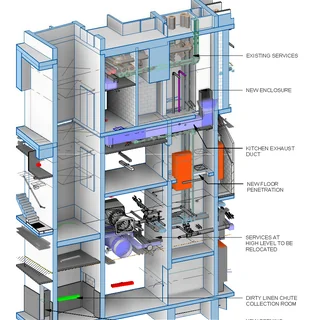
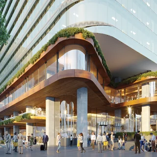
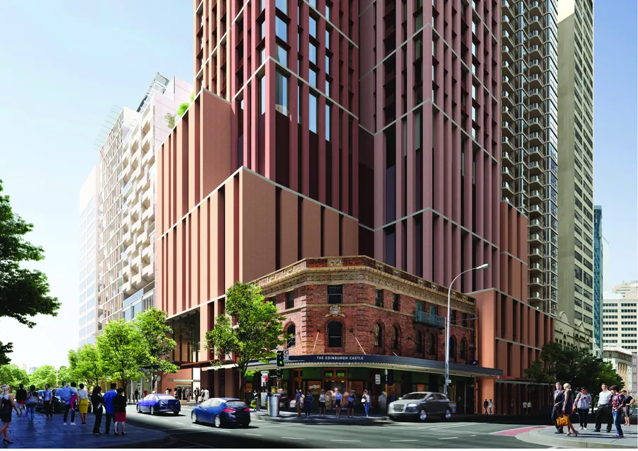
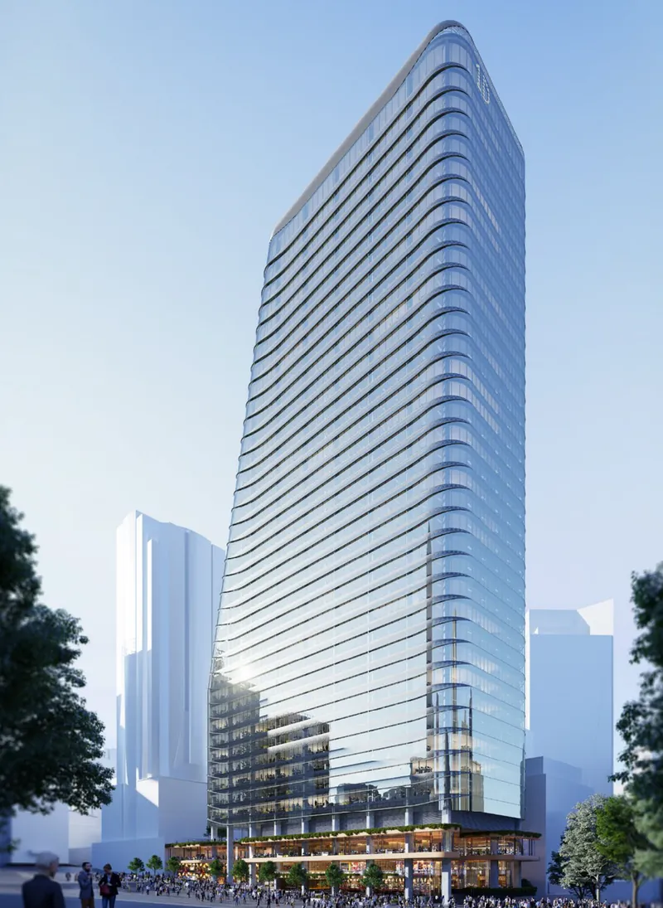
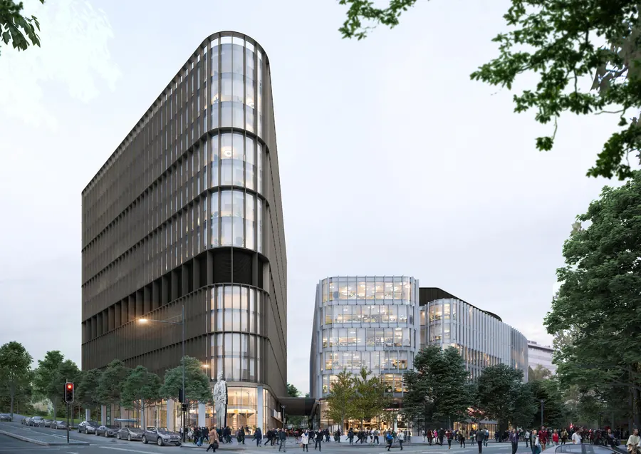
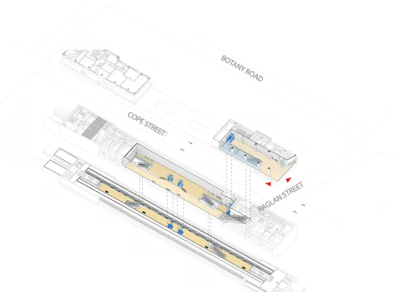
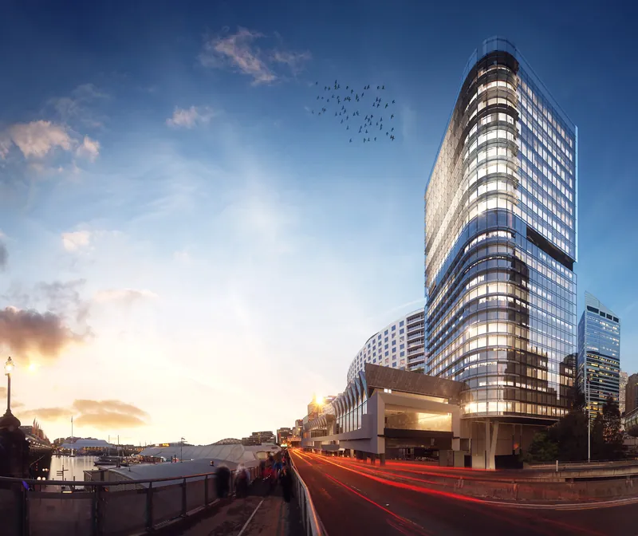
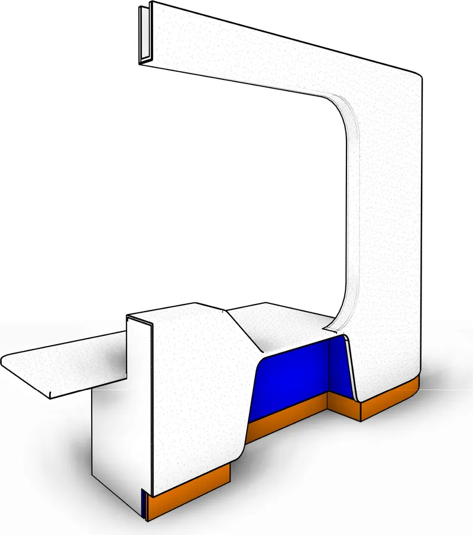

Design Technology and digital strategy
National strategy across multiple studios: investment priorities, operational risk, capability gaps and implementation sequencing, translated into business cases that practice leadership can decide on.
Sydney, Australia

systems that
architecture runs onDesign Technology and BIM leader with 12+ years in Australian architecture. I set the strategy, governance and operating model that decide how a practice models, coordinates and delivers, then build the capability to run it.
I lead Design Technology as a business function, not a help desk.
Over twelve years I have moved from documenting towers in Revit to setting the national strategy that decides how an entire practice models, coordinates and delivers. Through to July 2026 I established and ran the Design Technology and BIM function across three studios at Bates Smart, supporting approximately 270 staff, functionally leading 14 BIM coordinators, specialists, technicians and reporting directly to Practice Directors on investment priorities, delivery risk and capability gaps.
The work I care about sits where strategy meets the model: governed standards people will actually follow, BIM gates that surface setup decisions before they become rework, a single source of truth instead of a shared drive, and automation that gives hours back to designers. I connect the full chain, from Forma and Rhino site design through Revit documentation into Autodesk Construction Cloud coordination and project delivery.
I advocate for the responsible adoption of AI, automation and data-driven workflows, assessed on whether they improve design quality, operational performance and the capability of the people doing the work.
National strategy across multiple studios: investment priorities, operational risk, capability gaps and implementation sequencing, translated into business cases that practice leadership can decide on.
Enterprise Revit standards, BIM Execution Plans, model division and LOD strategy, and mandatory project gates that surface setup and resourcing decisions early rather than at documentation.
Autodesk Construction Cloud and Forma governance, consultant coordination, model and data quality, and documentation strategy across complex multi-party, multi-office projects.
Dynamo, pyRevit and RhinoInside.Revit tooling built for real delivery problems, including a custom solar study tool for ADG and SEPP65 analysis, and routines that enforce standards automatically.
Structured vendor assessment, proof-of-concept testing, budget proposals and multi-year roadmaps, followed by enterprise deployment that survives contact with a busy studio.
Competency tracking, structured learning pathways, an eLearning platform and in-studio Lunch and Learn sessions, building adoption rather than mandating it.
Sep 2024 – Jul 2026
Bates Smart · Sydney, Melbourne & Brisbane
Led and nationalised the Design Technology and BIM function across three studios, supporting approximately 270 staff and functionally leading 14 BIM specialists, reporting directly to Practice Directors.
Established and executed the national Design Technology strategy, advising Practice Directors on investment priorities, operational risk, capability gaps and implementation sequencing. Translated technical issues into business cases and practical decisions covering BIM governance, project support, technology deployment and workforce capability.
Restructured and nationalised the BIM function with coordinated resource allocation, consistent role expectations and cross-studio support, addressing uneven BIM coverage across the Sydney, Melbourne and Brisbane studios.
Consolidated fragmented Design Technology infrastructure and support systems into DT Hub, a centralised platform in the SharePoint intranet bringing standards, procedures, approved tools, workflows, training and support into a governed source of truth for approximately 270 staff.
Influenced project and practice leadership to adopt mandatory Phase 20 BIM Discovery and Phase 30 BIM Engagement gates, embedded in the internal Project Smart and Audit Smart management system. The gates capture Revit setup, CDE strategy, model division, LOD and information requirements, responsibilities, documentation strategy and BIM Execution Planning at concept and design development rather than at documentation.
Led evaluation, proof-of-concept testing and enterprise deployment of Design Technology platforms following structured vendor assessments and pilots, and built the practice capability strategy through competency tracking, structured learning pathways, a global eLearning management system and regular in-studio Lunch and Learn sessions.
Jul 2021 – Sep 2024
Rothelowman · Sydney
Oversaw national BIM operations, evolving protocols and standards, and executed a multi-year BIM strategy integrating new technology into design and project delivery.
Spearheaded national BIM operations and drove the evolution of Rothelowman’s BIM protocols and standards, developing and executing a multi-year strategy that integrated new technologies to optimise design and project delivery.
Authored comprehensive technology evaluations, formulated budget proposals for future adoption and maintained a multi-year strategic BIM roadmap aligned to company goals.
Created an interactive 200-page Revit Manual standardising BIM practice, and led implementation of the Master Reference File, a comprehensive library of architectural and interior details, sheets and schedules supporting consistent project execution.
Built a custom solar study tool on RhinoInside.Revit, extending design analysis for ADG and SEPP65 requirements.
Led the BIM team and committee across creation, training and quality control of policies, procedures, standards, tools and data, and delivered practice-wide training, troubleshooting and support to embed BIM into project workflows.
Project oversight
Nov 2016 – Jul 2021
Bates Smart · Sydney
BIM manager on major towers and workplace projects, assessing, planning and executing BIM workflows, strategy and resourcing alongside the National BIM Manager.
Worked with the National BIM Manager across all facets of BIM, evaluated technology requirements for future adoption against company goals, and assessed, planned and executed BIM workflows, strategies and resourcing.
Ran studio-wide staff training and wrote the training manuals, provided technical support across the Autodesk suite, mentored project teams one-to-one on best-practice workflows, interviewed new staff and liaised with national vendors and developer support.
Coordinated internal and external stakeholders, managed documentation and modelling accountabilities, enforced company BIM standards within project teams, ran project kick-offs and automated routines to support standards and improve productivity.
Projects
May 2014 – Nov 2016
Cox Architecture · Sydney
Model management and senior documentation across hotel, health, transport and justice projects, including a 4,000+ hour construction documentation program for the Four Points hotel expansion.
Construction documentation for the refurbishment and expansion of an existing hotel: porte cochere, hotel lobby, a large convention and function addition built over a live motorway, and a new 27-storey tower and bar. Heritage interpretation of adjoining listed sites, structural and services coordination, BIM model management and deliverables, QA analysis and optimisation, clash detection, plus weekly site visits and inspection reports.
Reference documentation and 3D Revit, off-site joint-venture collaboration including OSD and EIS teams, with in-house structural and services coordination.
DA delivery and design in joint venture with STH Architects: 3D Revit modelling, shadow studies and design option exploration.
Design development of two basement levels, commercial fit-outs and additional conference space enclosure, implementing the model management plan, purging and clash detection.
Senior living and care facilities including Bankstown Residential Care, a dementia care facility at Cardiff NSW and ARV Lady Gowrie Retirement Village, Gordon, across design development, DA and tender documentation.
Sep 2013 – May 2014
Cox Architecture · Sydney
Authored and coordinated the national Revit content library: parametric families, standards and documentation assets used across Cox studios.
Built and coordinated reusable, standards-compliant Revit families and documentation content for national use, forming the foundation of consistent modelling practice across studios.
Five systems built to hold up across studios, not just on one project.
01 · Knowledge
02 · Operating model
03 · Governance
04 · Adoption
05 · Capability

8 pages38-storey build-to-rent tower over a live Metro station, in joint venture with Foster + Partners and Cox.
Project BIM Manager · Bates Smart

10 pages37-level tower delivered through a mid-project change of main contractor.
Project BIM Manager · Bates Smart

8 pagesTwo buildings, and the first project I led end to end as BIM Coordinator.
BIM Coordinator · Bates Smart

8 pagesStation reference design on a $12 billion network programme.
BIM Model Manager · Cox

12 pagesTower, lobby and convention space built over a live motorway.
BIM Model Manager · Cox

7 pagesParametric families authored to LOD 500 and a controlled naming schema.
Content development · Cox
Autodesk professional certification in Revit Architecture.
91scoreGeneral construction induction: site access and safety.
Outside the model
Photography, travel, bouldering, snowboarding and the gym. References available on request.
Let’s talk about what your practice could run on.
Open to Design Technology leadership, BIM management and digital transformation roles across Australian practice. Happy to talk through governance, delivery risk, information management or where AI genuinely earns its place in a studio.